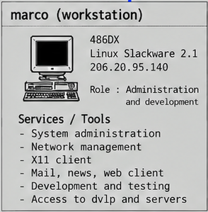

Systems Overview · 1995
marco (workstation)
La workstation Linux di Marco Iannacone è parte del contesto operativo dell’ufficio di Milano: nacque come ambiente di sperimentazione e divenne la stazione quotidiana di amministrazione e la sede della presenza Web personale di Marco.

images/internetforce_server_map.png (Systems Overview 1995).Identità del sistema
- Hostname
marco- Indirizzo
206.20.95.140· LAN dell’ufficio- Piattaforma
- PC 486DX
- OS
- Linux Slackware 2.1 + X11
- Ruolo
- Amministrazione di sistema e di rete; sviluppo e test.
Servizi e strumenti
| Servizio / ruolo | Descrizione | Evidenza / configurazione | Documentazione |
|---|---|---|---|
| Amministrazione di sistema | Stazione quotidiana di amministrazione dei server Sun e dell’infrastruttura. | rc.local · marco.hard-disk.fdisk.txt · rc.0 | questo README |
| Gestione di rete | Configurazione IP/netmask/broadcast/gateway della workstation. | rc.inet1 | Panoramica dell’architettura |
| Client X11 | Uso come client X verso DVLP e i server. | regola 14 di FireWall-1 (dvlp, marco → marco, dvlp : X11) |
Sicurezza |
| Client mail / news / web | Posta e servizi Internet dell’epoca. | sendmail.cf.linux | Posta elettronica |
| Sviluppo e test | Sperimentazione e test; non era la catena di build di produzione. | ambiente descritto in prosa | Sviluppo |
| Monitoraggio tkined / SNMP | Monitoraggio dell’infrastruttura. | artifacts/tkined/ · artifacts/monitoring/idt-connectivity/ | Monitoraggio |
Materiali e attività associati
Materiale storico collegato alla workstation o al lavoro tecnico di Marco, distinto dai servizi in esecuzione sulla macchina. La scheda rappresenta l’ambiente del 1995: parte del materiale è successivo e va letto con la data indicata.
| Materiale | Data / contesto | Descrizione | Collegamento |
|---|---|---|---|
| Guida a Internet / Hypertxt | 1994–1997 | Guida ipertestuale a Internet di Marco Iannacone (MaISoft Hypertxt); copie parziali recuperate dalla workstation. | systems/marco/hypertxt/ |
| PGP | 1995-09-17 · 1995-10-11 | Uso personale di Marco di PGP, uno dei primi programmi di crittografia a chiave pubblica diffusisi ampiamente negli anni ’90, iniziato prima di Internet Force e proseguito durante e dopo; qui è conservato il keyring pubblico recuperato. | systems/marco/pgp/ |
| pippo.com e presenza Web personale | snapshot 1997 (pagina dal 1995) | Sito personale di Marco, quando era ancora ospitato sull’infrastruttura di Internet Force. | systems/marco/personal-web/pippo.com-1997/ |
| Easy! (Welcome Kit) | 1996 | Kit software per il collegamento e la navigazione su Internet, realizzato da Marco Iannacone per i clienti di Internet Force. | artifacts/customer-welcome-kit/ |
| Monitoraggio tkined / SNMP | 1995 | Mappa di rete creata dalla workstation Linux/X e file SNMP recuperati. | artifacts/tkined/ |
| DEFCON V (articolo) | 1997 — successivo a Internet Force | Articolo sul DEFCON V di Las Vegas, una delle prime convention hacker degli anni ’90, recuperato dal backup DAT della workstation. | artifacts/…/defcon-v-1997/ |
Cronologia. DEFCON V è materiale del 1997, successivo alla fase operativa di Internet Force: non va presentato come presente sulla workstation nel 1995. Lo stesso vale per lo snapshot pippo.com del 1997. Il materiale recuperato dal DAT documenta la continuità del percorso tecnico di Marco, non dimostra che ogni artefatto fosse fisicamente su questo disco nel 1995.
Nelle mappe
Documentazione tecnica completa
Apri il README canonico della workstation
La pagina HTML è una presentazione compatta; il README Markdown è la fonte canonica.